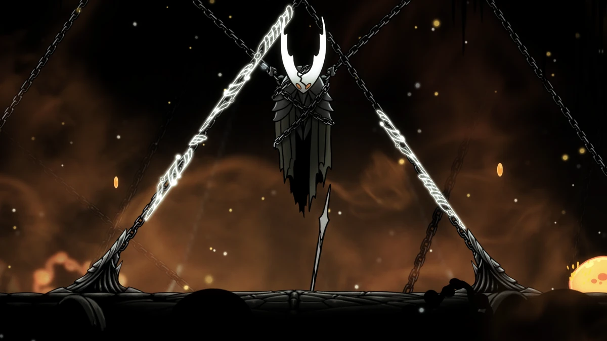

A Wyrm Reborn
At some point in history, a giant Wyrm arrived in Hallownest and decided to settle there. Wyrms are a great and ancient species, gifted with the ability of foresight. Based on clues from the game, it appears that this Wyrm was the last of it's kind. Once it settled, it promptly perished. From within the molted corpse, there was an egg that hatched into a new being, the Pale King. The Pale King was a higher being, a life-form that rises above all others. He was said to shine with a pale light, and whose goal was to lord over the bugs of the land and rule. And so, he began to build his Kingdom of Hallownest.
His first task was to bring the existing tribes of the land into his Kingdom's embrace. The Mushroom tribe of the Fungal Wastes had a hivemind that welcomed the protection of the Pale King, and believed his gift of foresight would be a boon to them. The Mantis Tribe that also resided there, were less cooperative. They had a long and rich history and culture, and they were fiercely territiorial. They did not care for the pale King and his kingdom, but they did agree to a truce. In exchange for autonomy, they would gaurd the entrance to Deepnest, and prevent the beasts of that land from invading. The Mosskin of Greenpath, followers of the higher being Unn, were more amicable, and joined with Hallownest and allowed the Pale King to construct roads throught the area that lead deeper into the kingdom. The Moth tribe, once devout followers of a being known as he Radiance, turned their backs on her to worship the new Pale King and his light. They were tasked with guarding the graveyards and resting places in the kingdom. Finally, the native wandering bugs of the land were driven only by base instinct and posessed little intelligence. The arrial of the Pale King however, changed this and bestowed true sentience and thought to these creatures, and they became the first citizens of Hallownest.
With the peoples of the land united under him, the Pale King built the capital city of Hallownest, whose original name has been lost to the ages. At some point after the kingdom's fall, the ceiling of the city cracked, letting the waters of the lake above rain down, which led explorers to call it The City of Tears. The Royal Waterways were constructed below the city to handle the waste of the bugs who lived there and keep city conditions sanitary. The citizens of Hallownest constructed shrines and idols of the Pale king throughout the city and the lands of the kingdom. Roads, paths for Stag beetles to traverse (known as the Stagways), and tram lines were built to connect the many different regions and allow the peoples to travel where they pleased. The spiders of deepnest resisted this construction, and stopped the worker bugs from completing a tram line to deepnest. There was also a mining operation set up in the Crystal peak, which sought to harvest and make use of the crystals that grew there. The Pale king did not rule this place alone, as he formed a union with another higher being, The White Lady and they ruled the kingdom together. Not much is known about her origins.
The Infection
When the Moth tribe abandoned the light of The Radiance, they awoke a great anger in this god. After a time, The Radiance began to appear as a light in the dreams of the bugs of Hallownest, and this light also manifested into a physical Infection that spread throughout the corridors of the Kingdom, turning bugs into mindless and aggressive husks, with pulsing orange cysts on their bodies. As the inspection spread, great efforts were taken to try to stop the infection from spreading. The capital city closed its gates, and the stagways were abandoned, which caused most of the Stag Beetles to die out. Within the city, the scholars withing the Soul Sanctum attempted to harness Soul, the life force of all creatures, to understand and stop the Infection. These puruits led to the deaths of hundreds of bugs, and the madness of the leader of this group. The mantis tribe, with their unshakable wills, were able to evade the infection. However, one of the four mantis Lords turned against the others, and he and his followers willingly embraced the infection as a way to grow stronger. This led to them being exiled from the village, and they eventually settled in the Queens Gardens in the south of Greenpath.
With his options running out, the Pale King decided to harness an ancient and dark power to help save his Kingdom. Deep below the City of Tears, lies the Ancient Basin where the King's White Palce was located. Deeper still lies The Abyss. A place where the ancient inhabitants of Hallownest worshipped an even more ancient entity known as The Void, an old enemy of the Radiance. The Pale King harnessed this Void, along with Soul, and created many creations that aided him around the White Palace. Once these experiments proved fruitful, he attempted to create a pure vessel, a being that would be devoid of both mind and will, and would thus be immune to the influence of The Radiance. The method of creation for this vessel was to engage in a union with the White Lady, whiched produced eggs that were cast into the Abyss. The eggs were then corrupted by the void, killing the children inside and making them empty vessels. Thousands of these vessels were created, but only one was chosen by the king. This vessel was dubbed the Hollow Knight, and was taken to the white palace, while the entrance to the Abyss was sealed off and the remaining vessels trapped inside. The Hollow Knight was trained and eventually used to trap the radiance within its dreams. Seals were put on the rsting place of the Hollow knight, held in place by three beings who agreed to help the Pale King and would come to be known as the Dreamers. These being were Monomon the Teacher, Lurien the Watcher, and Herrah the Beast, who only agreed to this plan in exchange for having a child with the Pale King, who would come to be known as Hornet. This halted the infection for a time, and memorials were built to the Hollow Knight, the Dreamers, and those who perished from the Infection.
However, this peace would not last. Soon, the infection began to leak out and permeate throughout the entire kingdom once more. As it turned out, the Hollow Knight was not as pure as the Pale King believed, as it was "tarnished by an idea instilled". Once this happened, the kingdom fell to ruin, and its citizens were left to wander its empty halls as slaves to the Infection. The Pale King somehow brought his Palace to the realm of dreams, and eventually perished atop his throne. The White Lady retreated to the Queens Gardens, and sheltered in a cocoon, as a way to atone for her part in creating the vessels. her cocoon was guarded by the knight Dryya, who gave her life to keep the Mantis traitors from reaching the queen. While most of the vessels remain trapped in the void, somehow a few of them were able to escape, including the player character, reffered to as "The Knight".